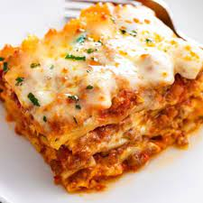

Lasagna

Description
A classic Italian favourite, this lasagna is made with layers of rich beef mince and a creamy sauce.
Ingredients
- 1 tbsp olive oil
- 1 onion, diced
- 1 carrot, diced
- 1 celery stalk, diced
- 2 garlic cloves, finely sliced
- 250g beef mince
- 250g pork mince
- 1 tbsp tomato puree
- 400g tin chopped tomatoes
- 200ml beef stock
- 200ml red wine
- 1tsp worcestershire sauce
- 9-12 lasagne sheets
- 50g parmesan, grated
- 150g mozzerella, shredded
For the white sauce
- 50g butter
- 50g plain flour
- 550ml semi-skimmed milk